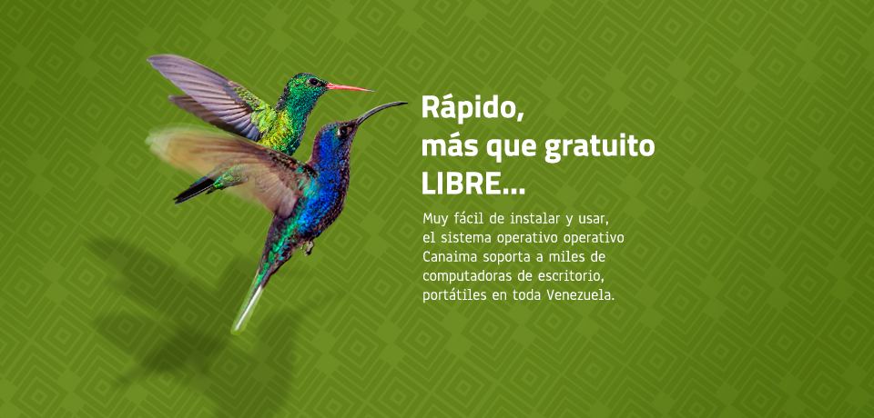

MANTENTE AL DIA
Inició el Ciclo de Desarrollo
de Canaima 4.0 "Kerepakupai"
La mañana de hoy lunes 14 de Enero de 2013 se ha dado inicio formal al nuevo ciclo de desarrollo de Canaima
Desarrollo software
14-01-201